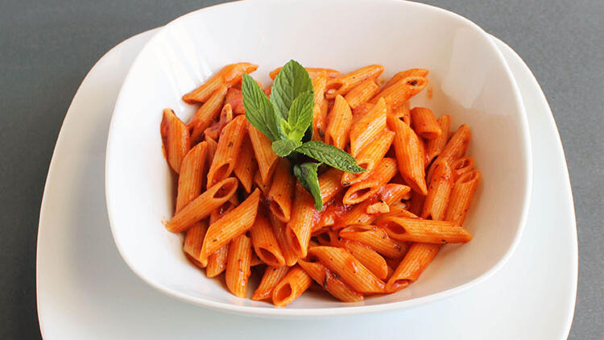

TARİFLERİMİZ
Eylül 28, 2021

- 1 paketfiliz Spagetti Makarna
- 1 su bardağı domates sos
- 1 yemek kaşığı domates salçası
- 1 tatlı kaşığı biber salçası
- 1 yemek kaşığı zeytinyağı
- 1 yemek kaşığı elma sirkesi
- 2 diş sarımsak
- 1 silme tatlı kaşığı toz şeker
Domates Soslu Spagetti Tarifi İçin Malzemeler
- Makarna paket üzerindeki pişirme önerisine uygun olarak al-dente kıvamda haşlanır.
- Geniş bir tavada tüm sos malzemeleri gerektikçe makarna suyu eklenerek pişirilir.
- Makarna süzülerek sosa ilave edilip karıştırılır. Sıcak olarak servis edilir. Afiyetler olsun!